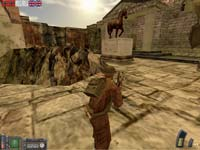
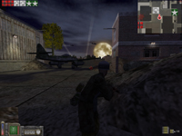
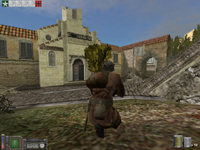
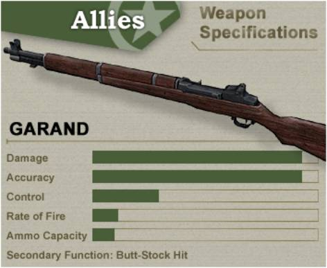

Welcome to the Day of Defeat manual. Day of Defeat is a World War II multiplayer game driven by the Half-life engine. DoD attempts to recreate WWII battles in both fictional and non-fictional environments - the game puts you in the shoes (rather, combat boots!) of a British, American or German soldier circa 1944, Western Europe.
Day of Defeat is a class-based, first-person shooter -- upon arrival in game, you will have the choice to play different types of soldiers -- from Rifleman to Machinegunners, to Snipers. Each class has its own mix of special abilities and weapons.
The overall goal of the game depends upon the map; whether it be to capture an area, defend a beach, or simply destroy the enemy. The 15 maps included with Day of Defeat will give players endless hours of replayability online. With a selection of nearly 34 weapons, players will have something new to try every time they play.
So for now, grab your helmet and rifle and prepare for the most immersive WWII game to date!
Table of Contents
1. Controls
2. The HUD
3. The VGUI
4. Bipods and Machineguns
5. Gameplay Types
6. Scoring
7. Maps
8. Classes and Weapons
Controls
Once you’ve downloaded and installed Day of Defeat, you’ll need to configure your controls before you play. Simply select ‘Options’ from the main menu, then the ‘Keyboard’ tab sub-menu.
Most of the controls are fairly standard to First-person Shooters, so those need no explanation. The following is a brief explanation of controls unique to Day of Defeat:
Use Voice Communication - This feature will allow you to communicate with others ingame using a microphone. Hold down this key and speak into the mic - those on your team will be able to hear you. Using this ability truly raises the levels of communication, teamplay, and fun. Voice communication will be setup during the installation of Day of Defeat.
Activate In-Game VGUI - This will bring up DoD’s in-game menu, useful for many things including Voice commands and Hand Signals. See the VGUI section for more information.
Voice Menu (1-3) - Brings up a quick selection of voice commands. Each selection will activate the associated voice signal and hand signal for that command.
Drop Primary Weapon – New to DoD is the ability to drop your primary weapon and pick up other dropped weapons by running over them. This ability comes in very handy when you run out of ammo or find that the situation calls for automatic weapon as opposed to the rifle you currently have. Some maps require that you pick up a rocket weapon (Bazooka, Panzerschreck, or Piat) in order to destroy objectives - you'll need to drop your primary weapon to pick up the rocket weapon.
Drop Extra Ammo - A useful feature that lets you pass ammunition to a teammate. Any class can share ammo with any other class. Make sure to keep your teammates using a Machine Gun well stocked.
Drop Objective Item – This ability allows you to drop items that are important to completing a levels objective, such as satchel charges or documents, to other teammates.
Prone - In addition to crouching, users can ‘prone’ - basically meaning they lay on the ground. Machine Gunners can deploy their bipod only when prone. (Or when in an MG Nest area.) A user’s weapon will become temporarily disabled while ‘going prone’ or standing back up.
Sprint - Holding down this key will give you a burst of speed. As you sprint, your stamina will drain quickly, so sprinting is only recommended in sticky situations.
Secondary Attack - Many weapons have a secondary attack option. Secondary attack with an infantry rifle will stab with its bayonet or use the rifle butt as a melee attack, while secondary attack with MG’s will deploy the bipod. (Only when prone, or in an MG nest) Secondary attack using any sort of scoped weapon will activate it’s scope.
Pick Up Grenades (Use Item) - If a grenade lands at your feet, you may pick it up and throw it back by using this key. Watch out, though - grenades have a fuse of 5 seconds, and will go off in your hand if you aren’t careful!
Overview and Mini-Maps
– The overview and mini maps will provide you with a map of the level you are playing. These are very useful to help orient yourself to the objectives as well as teammates in addition to providing you with the layout of the level. Your icon is surrounded by white and is slightly larger than your teammates icons that are surrounded in black. By pressing the map key the first time, the full screen overview will come up. Press the key a second time and the overview will switch to the mini-map. You can also zoom in and out of the mini-map by defining the mini-map zoom key.
Place Map Marker - Places the currently selected map marker icon on the minimap. To select where to place the icon, move your crosshair over the location while looking around in the world and hit the 'place map marker' key.
Select Next Map Marker - Selects the next map marker icon in the list. The current icon will be displayed on the HUD.
Select Previous Map Marker - Selects the previous map marker icon in the list. The current icon will be displayed on the HUD.
The HUD (Heads Up Display)
Day of Defeat has a graphical HUD that displays useful information such as Objective Status, ammunition, reinforcement times, etc. The following provides a brief explanation for each part of the HUD:
1) Objective Status - Lets you know who is in possession of what flags or objectives, including ‘neutral’ flags displayed as gray. Area capture flags will slowly change colors as they are being captured. Standing in a capture zone will slowly change the flag of that zone to your side. Some area captures require more than one person to capture. When this is the case, the icon associated to the flag/objective in the Objective Status (1) will show a #/# indicator to show you how many players you have versus how many you need. So 1 person at a flag/objective that requires 2 people will display 1 / 2 under its icon.
2) Area Capture/Plant Explosives Indicator - Let’s you know that you are in an ‘Area Capture Zone.’ In addition to the Area Capture icon, a ‘Plant the Explosive’ icon will come up when you have a TNT bundle or satchel charge and are near a destroyable object.
3) Machine Gun Nest Indicator - Let’s you know that you are in an area that allows you to deploy your bipod while standing. This will work only for a weapon with a bipod. These nests are usually found near bunkers, sandbag walls, and window sills.
4) Message Area - This area is reserved for map messages and chat messages.
5) Stamina Indicator - A graphic display of how much stamina your player currently has. Actions such as sprinting and jumping reduce your stamina. Stop moving to regain your stamina.
6) Health Indicator - A graphic display of a player’s current health. Health cannot be recharged like stamina can.
7) Crosshair - The middle dot represents where you are aiming. The distance of the 'legs' of the crosshair from the central dot gives a rough estimation of how accurate your fire will be. Movement will decrease your accuracy - stand still to achieve the best results. Zooming with a sniper rifle and deploying the bipod of a Machinegun will dramatically increase your accuracy as well.
8) Mini-map - With the overview map in mini-map mode, you can still play but also find your way around the map and see the location of teammates.
9) Clips - A graphic representation of the number of clips left in your inventory, not including the clip that is currently loaded.
10) Ammunition - Number of rounds left in your current clip.
The VGUI
The VGUI is a useful menu system in DoD that allows you to do a number of things while playing the game. The following is a short description of each VGUI item.
1) Help - Gives you specific information about your current server, map, and class.
2) Change Class - Allows you to change your current player class. You will use the new class on your next respawn. (Death)
3) Change Team - Allows you to change your current team. Changing teams results in an instant respawn.
5-6) Voice Messages - Lets you select from a series of voice commands to use. Some of these will also result in your player using hand signals.
7-8) Hand Signals - These accomplish the same thing as the Voice Commands, but without the shouting. A useful tactic when stealth is required.
Bipods and Machineguns - How to Use Them?
At first glance, the use of a bipod may seem a bit tricky. The following is a quick run through of how to use weapons with bipods effectively.
All three Machine Guns are horribly inaccurate unless they are deployed. To deploy a machinegun:
Go prone with the ‘prone’ key.
Deploy your bipod with the ‘secondary fire’ key.
A short animation will play, and you will be ready to rock. While deployed, a player cannot move, and has only a limited viewing range. Undeploy your bipod using the ‘secondary fire’ key in order to move again.
Machine Guns can only be reloaded if the bipod is deployed. Rifles with bipods (Such as the BAR, BREN, and FG42) can be reloaded at any time.
Machine Guns can also be used while standing in certain areas of most maps. These areas are called ‘MG Nests’, and a small graphic will pop up in your HUD to indicate you are in a nest. See the HUD section to view the MG Nest graphic. Once in an MG nest, a player can deploy his bipod while standing.
You will find that Machine Guns run out of ammo very quickly. Since the Machine Gunners have no secondary weapons, this can be a major problem. To alleviate this, you will need to ask your teammates to pass ammunition. Everyone carries an extra clip of ammo and they can drop this to you using the ‘Drop Ammo’ key.
Gameplay Types
The variety of maps that come with DoD cover a number of different gameplay types (Gameplay meaning the general setup, or rules, of the game.) However all feature DoD’s signature ‘Wave Reinforcement’ system. After joining a game, choosing a side and player class, the player will ‘spawn’, ready for combat. With ‘Wave Reinforcement’ gameplay, upon a death, the player will be placed in a ‘Reinforcement’ pool. The reinforcement timer is started by the first player who is killed. Any other players who are killed join that players timer until it runs out and then the whole pool will ‘respawn’( return to the battle) together. This system provides for players to continue playing without any large amounts of downtime as well as encouraging teamwork.
Territorial Control
This gameplay type involves the capturing of flags spread throughout the map. Some flags can be captured by simply running over them. Other flags are ‘Area Capture’ – meaning that they can be captured simply by standing in a zone around the flag. Certain Area Capture zones will require more than one team member to capture. Once enough players are present in a flag zone, that flag will slowly change to their control.
Capture/Destroy the Objective(s)
In these maps the players must perform a specific task in order to ‘win’ the map. This task can be anything from destroying an 88mm flak cannon, to capturing a fuel truck. Each team will spawn in a specific area, and will be given instructions on what their task is. In some cases both teams will have objectives to attend to. In other cases, 1 team is on the offensive trying to accomplish their goal and the other is on the defending side trying to prevent that from happening. In these cases the team on the offensive will have a time limit to perform their job and if that limit expires, the defending team will win. When an objective needs to be destroyed, an item such as a satchel charge will need to be taken to that object. Stay near the objective for a few seconds to set the timer. Once the timer is set, large red numbers will count down near the object and then it will explode so clear out. In objective maps with rocket weapons, the rockets can be used to destroy the objective in addition to Satchel charges if they are present.
Scoring
Scoring in Day of Defeat depends on the map played. Be sure to read the mission briefing to determine the scoring system for a particular map.
Scoring is based on the following criteria:
Objectives. Teams gain points for completing all objectives. Individuals get points for any participation in completing an objective.
For Territorial Control maps, the team receives 1 point per flag captured and one point per flag to the individual who touched it. A team receives 50 points for capturing the entire map.
For Capture / Destroy the Objectives maps, individuals typically receive 10 points per objective completed. Players can also receive points for dropping ammo to other players. For teams, the scoring for these maps usually ends up all or nothing -- the team to complete all objectives wins the full 50 points.
Maps
DoD_Anzio
January, 1944, Italy
The Allies have prepared a simple, fast beach assault to capture the city of Anzio. Little did they know that the Germans were already there, waiting.
Allied Objectives:
- Capture the 5 flag points
Axis Objectives:
- Capture the 5 flag points
DoD_Avalanche
September, 1943, Italy
A couple of days after establishing a beachhead at Salerno, the American advance towards the hills was stopped by a vicious German counterattack on September 13. Intense street fighting ensued, with some towns changing hands several times a day.
Allied Objectives:
- Capture the 5 flag points
Axis Objectives:
- Capture the 5 flag points

DoD_Caen
July, 1944, France
The battle of Caen was planned even before D-day, and was not over until mid July. What took place in the streets was some of the fiercest combat of the Western Front.
British Objectives:
- Capture the 5 flag points
Axis Objectives:
- Capture the 5 flag points
DoD_Charlie
June 6th, 1944, Normandy
D-Day - Today is the turning point of the war! Failure is not an option -- move up the beach, or perish!
Allied Objectives:
- Destroy the shingle to move up the beach
- Destroy the two 88 'flak' guns
- Destroy the Axis radio tower
- Destroy the artillery bunker
Axis Objectives:
- Defend the beach
- Once the beach defenses are breached, fall back and defend
DoD_Chemille
March, 1944, Western Front
Chemille has become a wasteland of vicious urban combat - pick your way through the destroyed ruins to capture the city.
Allied Objectives:
- Capture the 4 flag points
Axis Objectives:
- Capture the 4 flag points
DoD_Donner
June, 1944, Normandy
The Allies struggle through the hedgerow country towards the key town of Sainte Lo - the intersection for roads to key cities such as Caen and Carentan.
Allied Objectives:
- Capture the 5 flag points
Axis Objectives:
- Capture the 5 flag points
DoD_Escape
Holland, 1944
Operation market garden launched a few hours ago, and the allies
are moving into position. Paratroopers of the 101st division secured a
bridge and a key supply route along the river Maas. Unfortunatly an axis
paratrooper unit is stationed in the area, and are shelling the allies with
nebelwerfers. It wont be long before the axis launch an attack to destroy the bridge.
Allied Objectives:
- Destroy the two Axis Nebelwerfers with satchel charges
Axis Objectives:
- Destroy the bridge ( requires two tnt charges )
DoD_Flash
October, 1944, German Countryside
British troops have advanced into what appears to be a small, quiet village. A few platoons are ordered forward to check out the situation.
British Objectives:
- Capture the 5 flag points
Axis Objectives:
- Capture the 5 flag points

DoD_Flugplatz
March 1945, Germany
American troops are advancing into Germany and have assaulted
an airfield where ME-262 jet pilots are being trained. Crack
German paratroopers are guarding the base and they will do
anything to drive the Allies out.
Allied Objectives:
- Capture the 6 flag points
Axis Objectives:
- Capture the 6 flag points
DoD_Forest
April, 1944, Western Front
Two opposing forces have dug-in within the cover of a French forest. Walk carefully and capture the trenches!
Allied Objectives:
- Capture the 4 trenches
Axis Objectives
- Capture the 4 trenches
DoD_Glider
June, 1944, Normandy
Allied paratroopers have dropped behind the D-Day beaches to disrupt enemy communication and reinforcement to the front.
Allied Objectives:
- Destroy the '88' flak cannon
- Destroy the "Freya" Radar set
- Destroy the Radio room inside the castle
- Capture the German forward supply house
- Capture the German bunker
Axis Objectives:
- Clear the area of Allied paratroopers
DoD_Jagd
June, 1944, Near Caen
The British Army is advancing towards Caen, but is being held up in the town of Viller-bocage by a German Panzer division. To make matters worse, a Horsa glider carrying plans for the attack on Caen has crashed in enemy territory.
British Objectives:
- Recover and return the plans from the downed glider
- Defend the Cromwell tanks
Axis Objectives:
- Stop the British from recovering the battle plans
- Destroy both British Cromwell tanks
DoD_Kalt
December, 1944, Western Front
The half-frozen town of Kalt became the setting for some of the most brutal fighting of the war - firefights raging in the streets, houses, and sewers.
Allied Objectives:
- Capture the 5 flag points
Axis Objectives:
- Capture the 5 flag points
DoD_Kraftstoff
October, 1944, Deep in Allied territory
German forces, on a major offensive, have discovered an Allied fuel dump. Low on fuel for their tanks, the Axis troops decide to capture the town's supplies.
Allied Objectives:
- Defend the Fuel Truck
- Defend the Fuel Dump
Axis Objectives:
- Capture the Fuel Truck
- Capture the Fuel Dump

DoD_Switch
Late September, 1943, Italy
Intense fighting continues in the mountains of Italy.
This town with switchbacked streets is a key strategic
point in the Allied advance.
Allied Objectives:
- Capture the 6 flag points
Axis Objectives:
- Capture the 6 flag points
DoD_Vicenza
April, 1945, Italy
The Allies have advanced up the rocky spine of Italy, nearly to the city of Vicenza. Tanks have fired shells from a distance, but before they can roll into the city the King Tiger tank must be destroyed.
Allied Objectives
- Destroy the King Tiger with Bazookas or satchel charges.
- Prevent the Axis troops from destroying the two Allied jeeps.
Axis Objectives
- Destroy the Allied Jeeps with Panzerschrecks or satchel charges.
- Prevent the Allies from destroying the King Tiger tank.
DoD_Zalec
January, 1945, Western Front
Paratroopers have landed near the city of Zalec with the objective of capturing the town and removing all German resistance.
Allied Objectives:
- Capture the fountain near the clock tower
- Destroy the three Axis Panzers
- Capture the Zalec church
Axis Objectives:
- Defend the fountain
- If the fountain is captured, fall back to the Panzers
- If the tanks are destroyed, fall back to the church
Classes and Weapons
Rifleman
Primary Weapon: Garand Rifle
Primary Ammo Loadout: 11 clips, 8 rounds each
Secondary Weapons: Colt Pistol, Knife
Grenades: 2
The Rifleman, aka "light infantry" is a good, all-around class who is deadly at both long and short range. Not as effective in the move in assaults however.
Garand
Operation: Semiautomatic
Caliber: .30-06 Rifle
Capacity: 8 round clip
Weight: 9.5 lbs
Named after its inventor, John C. Garand, the "U.S. Rifle, Caliber .30, M1" was developed throughout the 20's and 30's, finally entering military service in 1936. It was designed to be mass produced, and easily cleaned in the field. The final product was an accurate, reliable, efficient rifle that was easily the best semi-automatic weapon used by any country during the war.
Game Tips: The distinctive 'ping' sound of a Garand clip being ejected can be heard by nearby players and is a dead giveaway to the enemy that you're out of ammo. Keep in mind that if you do run out of ammo, you can always hit enemy players with the butt of your weapon using the 'secondary fire' key.
Staff Sergeant
Primary Weapon: M1 Carbine
Primary Ammo Loadout: 11 clips, 15 rounds each
Secondary Weapons: Colt Pistol, Knife
Grenades: 1
The Staff Sergeant is a class designed for assaults, as well as close-in engagements. With the lighter recoil of the M1 Carbine, this class can hit targets quickly and accurately. This class is ideal for short range inner city fighting.
Master Sergeant
Primary Weapon: M1A1 Thompson
Primary Ammo Loadout: 7 clips, 30 rounds each
Secondary Weapons: Colt Pistol, Knife
Grenades: 1
The Master Sergeant is a class designed for assaults, as well as close-in engagements. With the Thompson, he can 'spray and pray'. This class is ideal for short range inner city fighting.
Thompson
Operation: Automatic
Caliber: .45 ACP
Capacity: 30 round box magazine
Weight: 11 lbs
The Thompson submachine gun, or "Tommygun" as it was called by the troops, wasn't initially accepted into the US Army. The development of the Carbine and Garand superceded research of any submachine gun, so it wasn't until after Pearl Harbor that the Army saw a use in the weapon - in fact, early versions of the Thompson were used by British troops before they were used by Americans. The weapon wasn't as easy or cheap to manufacture, however, and was eventually replaced by other weapons late in the war.
Game Tips: The Tommygun can be devastating at short range – aim low and fire in long bursts – the recoil will drag your fire upwards across your target.
Sergeant
Primary Weapon: M3A1 ‘Greasegun’
Primary Ammo Loadout (Thomspon): 7 clips, 30 rounds each
Primary Ammo Loadout (Carbine): 11 clips, 15 rounds each
Secondary Weapons: Colt Pistol, Knife
Grenades: 1
The Sergeant is a class designed for assaults, as well as close-in engagements. With the Greasegun, he can “spray and pray”.
Greasegun
Operation: Automatic
Caliber: .45 ACP
Capacity: 30 round box magazine
Weight: 9.9 lbs
Considering the manufacturing problems of the Thompson, the Ordnance Department began to look for a cheaper replacement as early as 1941. Numerous trials were held, including tests of the British "Sten" submachine gun. The overall winner of these tests was dubbed the "M3A1 Submachine gun", or "Greasegun." The weapon was made entirely of stamped metal, making it incredibly cheap and easy to mass produce. The Greasegun was supplied to troops that could not get a Thompson, and was especially popular with tank crewman, since its small size allowed it to fit inside crew compartments.
Game Tips: The M3A1 Greasegun is nearly identical to the Thompson, the main difference being the Greasegun’s slower rate of fire. Although it doesn’t spray as much lead as the Thompson does, its slower rate of fire allows a player to conserve ammunition. The Greasegun is very useful in the prone firing position – its accuracy will allow an easy headshot.
Sniper
Primary Weapon: Springfield Sniper Rifle
Primary Ammo Loadout: 11 clips, 5 rounds each
Secondary Weapons: Colt Pistol, Knife
Grenades: None
The Sniper is a tricky class to play. Although he requires team support on the move, once he’s found a good position, he can hold his own against entire squads of enemies.
Springfield
Operation: Bolt-action
Caliber: .30-06 Rifle
Capacity: 5 round stripper clip
Weight: 9.38 lbs
US military forces had no official sniper rifle at the beginning of the war. To meet the demand, the Ordnance Department ordered that the M1903A3 rifle be converted for the job. The resulting weapon, designated M1903A4, was the only mass-produced sniper rifle of the war. Although it was not a true, dedicated sniper rifle, it served its purpose and performed reasonably well.
Game Tips: Crouching and laying on the ground will help eliminate the “sway” encountered while zoomed in. Standing and firing is very difficult with this weapon.
Support Infantry
Primary Weapon: Browning Automatic Rifle (BAR)
Primary Ammo Loadout: 12 clips, 20 rounds each
Secondary Weapons: Colt Pistol, Knife
Grenades: 1
The Support Infantry is a hybrid of the Rifleman and Sargeant classes. His BAR packs enough firepower and accuracy to be deadly at almost any range, although his clip capacity and slower speed limit him on assaults.
BAR
Operation: Automatic
Caliber: .30-06 Rifle
Capacity: 20 round box magazine
Weight: 18.5 lbs
The Browning Automatic Rifle first saw use in World War I. At the time, its twenty round magazine and automatic fire capability bridged the gap between the rifle and machinegun. It was so popular that almost every other Allied country requested it throughout the war. It maintained this role through the second World War, its only drawbacks being the lack of a quick change barrel, and its limited magazine capacity. Despite these shortcomings, it was constantly being requested in numbers that could not be produced, especially during the Pacific campaign.
Game Tips: The BAR’s heavy recoil and low magazine capacity will make long range automatic fire useless. Fire in 2-3 shot bursts for the best effectiveness. Its primary usage is in support - bipod down, firing at medium to long range. You can also deploy the BAR’s bipod for maximum accuracy.
Machine Gunner
Primary Weapon: .30 Caliber Machine Gun
Primary Ammo Loadout: 2 boxes, 150 rounds each
Secondary Weapons: Colt Pistol, Knife
Grenades: None
Like the Sniper, the Machine Gunner requires the support of teammates to be effective. On the move, his undeployed weapon is virtually useless. Once in position, a good Machine Gunner can decimate anything unfortunate enough to be in its path. Once a Machine Gunner runs low on ammo, however, he will need a teammate to pass ammo boxes.
.30 Cal
Operation: Belt-fed, automatic
Caliber: .30-06 Rifle
Capacity: 150 round belt
Weight: 32.5 lbs
Initially developed only as a tank-fitted weapon, The M1919A4 .30 Caliber Light Machinegun eventually filled a role that was missing in a typical US infantry squad - a mobile machinegun. The Machineguns in use at the time were developed before World War I and could only serve a defensive, static role because of their weight. The M1919A4 was light enough that it could move with the squad and be setup with tripod or bipod at a moment's notice. It was light enough to even be dropped with paratroops, who's minimal loadout usually lacked firepower.
Game Tips: The 30 cal has a reasonable rate of fire and a large supply of ammo – making sustained suppressive fire very useful with this weapon.
MG Usage: Machineguns are nearly useless when not deployed. Go ‘prone’ and hit ‘secondary fire’ to deploy your bipod. (Or, find an ‘MG nest’ to deploy the bipod while standing.)
Rocket Infantry
Primary Weapon: Bazooka rocket launcher
Primary Ammo Loadout: 6 Bazooka shells
Secondary Weapons: Colt Pistol, Knife
Grenades: None
Bazooka
Operation: Hand-loaded shells
Capacity: 1 rocket
Weight: 30 lbs
Developed later in the war, rocket weapons were the perfect instrument to destroy tanks and vehicles. They could also be used in certain situations to blow holes into walls, providing either an improvised escape or attack route.
Game Tips: The Bazooka is useful in many places for blowing holes in damaged walls or for completing objectives.
Bazooka Usage: The Bazooka must be deployed to fire. Hit ‘secondary fire’ to shoulder your bazooka.
Allied Para
Airborne troops will only appear on “Para” maps. Paratroopers can select from any normal weapon, as well as paratrooper-specific weapons. (The Greasegun and folding stock Carbine) Like normal classes, they carry a number of grenades depending upon the primary weapon that they choose.
GERMAN CLASSES
Grenadier
Primary Weapon: Karbiner 98k Rifle with Bayonet
Primary Ammo Loadout: 13 clips, 5 rounds each
Secondary Weapons: Luger Pistol, Spade
Grenades: 2
Like the Allied Rifleman, the Grenadier is a very versatile class. In addition to his accurate, powerful rifle and attached bayonet, he also has two grenades with which to cause havoc.
K98
Operation: Bolt-action
Caliber: 8mm Mauser
Capacity: 5 round stripper clip
Weight: 8.5 lbs
The Karbiner series of rifles were issued to most German infantrymen throughout World War I and II. It proved reliable through both wars: delivering heavy rounds at long ranges, with great accuracy. An attachable bayonet was also included as standard issue.
Game Tips: In addition to the K98’s great accuracy at long ranges, the bayonet can be a very effective weapon in close quarters – hit the ‘secondary fire’ key to use it.
Stosstruppe
Primary Weapon: Karabiner 43
Primary Ammo Loadout: 8 clips, 10 rounds each
Secondary Weapons: Luger Pistol, Spade
Grenades: 2
The Stosstruppe class carries Germany's reply to the US M1Garand and Soviet SVT40 rifles, the K43 provides this class with semi-automatic one-shot-kill capability. After learning to control the K43's recoil, this weapon and can turn the tide of a battle.
K43
Operation: Semiautomatic
Caliber: 8mm Mauser
Capacity: 10 round box magazine
Weight: 8.6 lbs
Throughout 1941-1942, the German Army’s standard issue rifle, the K98k, simply could not compete with Soviet semi-auto rifles in sheer volume of fire. To answer that discrepancy, Germany engineered a semi auto rifle of its own. Although it was never produced in the numbers suitable to equip all frontline troops, the K43 (Also known as the ‘G43’) proved to be an effective weapon, especially in the sniper role.
Game Tips: The K43 is very similar to the Garand in performance – great for medium/long ranges, not quite as effective close-in.
Unteroffizier
Primary Weapon: MP40 Machine Pistol
Primary Ammo Loadout: 7 clips, 31 rounds each
Secondary Weapons: Luger Pistol, Spade
Grenades: 1
Like the Allied Sargeant, the Unteroffizier is a class designed for assaults, as well as close-in engagements. This class is very similar to the Scharführer class, although the MP40 trades damage for reduced recoil.
MP40
Operation: Automatic
Caliber: 9mm Parabellum
Capacity: 31 round box magazine
Weight: 8.7 lbs
A new type of weapon was required for a new type of war - blitzkrieg. Although the K98 was a fantastic bolt-action rifle, it could not produce the volume of fire required in every situation. The 'submachine gun' filled a role between rifle and machinegun, and the MP40 was one of the first true submachine guns.
Game Tips: Like the Tommygun, the MP40 is one of the few guns that can be used effectively on the run – although accuracy is poor while moving, the MP40’s volume of fire will usually keep it effective.
Sturmtruppe
Primary Weapon: Sturmgewehr 44
Primary Ammo Loadout: 7 clips, 30 rounds each
Secondary Weapons: Luger Pistol, Spade
Grenades: 1
The Sturmtruppe class carries the first true assault rifle in history, this class can perform almost any role with effectiveness. The Stg44's medium sized round provides knock down power while keeping recoil to a minimum. The Stg44 is best used firing in short 2 to 3 shot bursts.
STG44
Operation: Automatic
Caliber: 8mm Kurz
Capacity: 30 round ‘banana clip’
Weight: 11.5 lbs
The MP44 assault rifle was easily one of the biggest achievements in history for the modern infantryman. The first ever of its kind in that it used a shortened rifle cartridge – more powerful than standard pistol ammo, but not so powerful as to become uncontrollable in sustained fire. The MP44, if production had continued, would have replaced every rifle and submachine gun in the German Army.
Game Tips: The MP44 is a good weapon all-around. Its accuracy is slightly better than the SMG’s, so can be used at both long and short range.
Scharfschuetze
Primary Weapon: Karbiner 98k Sniper Rifle
Primary Ammo Loadout: 13 clips, 5 rounds each
Secondary Weapons: Luger Pistol, SS Knife
Grenades: None
The Scharfschuetze is a tricky class to play. Although he requires team support on the move, once he’s found a good position, he can hold his own against entire squads of enemies.
K98 Sniper
Operation: Bolt-action
Caliber: 8mm Mauser
Capacity: 5 round stripper clip
Weight: 11 lbs
The standard German infantryman’s weapon was easily adapted as a sniper rifle with a simple “High Turret” scope attachment.
This versatility was one of the reason’s the K98’s service life was so long.
Game Tips: Crouching and laying on the ground will help eliminate the ‘sway’ encountered while zoomed in. Standing and firing is very difficult with this weapon.
MG-Schütze
Primary Weapons: MG42 Machine Gun, or MG34 Machine Gun
Primary Ammo Loadout (MG42): 2 boxes, 250 rounds each
Primary Ammo Loadout (MG34): 5 cans, 75 rounds each
Secondary Weapons: Luger Pistol, Spade
Grenades: None
The Machine Gunner was the backbone of German Military doctrine, and in turn the MG-Schütze is very important to any squad. Like its allied counterpart, the MG-Schütze requires support on the move, and extra ammunition once it's deployed. Although the MG42 provides more raw firepower, the MG34 trades clip capacity and rate of fire for accuracy and lighter recoil.
MG34
Operation: Belt-fed, automatic
Caliber: 8mm Mauser
Capacity: 75 round ‘assault’ drum
Weight: 26.6 lbs
The MG34, like so many other German weapons, was truly revolutionary. The MG34 was the world's first machinegun that could keep up with the standard infantry squad - light enough to be carried by a single man. It was also versatile in that it could be switched from an LMG, to a MMG, to a HMG depending on what add-ons it had.
Game Tips: The MG34 has the best accuracy of all the MG’s – it will retain some effectiveness undeployed and on the move, although a deployed position is still recommended.
MG Usage: Machineguns are nearly useless when not deployed. Go ‘prone’ and hit ‘secondary fire’ to deploy your bipod. (Or, find an ‘MG nest’ to deploy the bipod while standing.)
MG42
Operation: Belt-fed, automatic
Caliber: 8mm Mauser
Capacity: 250 round belt
Weight: 25.3 lb
Although the MG34 was revolutionary, it did have problems, including extreme sensitivity to dust and dirt. The answer to those problems was the MG42 - a weapon that became known for its extreme reliability and combat effectiveness. Its rate of fire was so fast that allied troops learned to fear the sound that it made - somewhat like that of canvas ripping since the bullet reports were so close together.
Game Tips: The MG42 has the highest rate of fire of any weapon in the game. You will overheat its barrel if you don’t control your fire.
MG Usage: Machineguns are nearly useless when not deployed. Go ‘prone’ and hit ‘secondary fire’ to deploy your bipod. (Or, find an ‘MG nest’ to deploy the bipod while standing.)
Axis Paratroops (Fallschirmjager)
Fallschirmjager troops will only appear on a few maps. Paratroopers can select from any normal weapon, as well as paratrooper-specific weapons ( the FG42 ). Like normal classes, they carry a number of grenades depending upon the primary weapon that they choose.
FG42
Operation: Automatic
Caliber: 8mm Mauser
Capacity: 20 round box magazine
Weight: 9.9 lbs
The FG42 was designed specifically for paratroops. Its light weight and small size was perfect for airborne operations – yet, at the same time, its 20 rounds of 8mm Mauser would provide the firepower of a light machinegun in each rifle. The desired outcome wasn’t exactly reached, however, as the weapon’s light weight and short length was ill-suited for a full size rifle cartridge. The recoil was enormous, making sustained automatic fire impossible. The complexity of the design slowed production to a crawl – only 7000 of these weapons were ever made.
Game Tips: The FG42 is fairly useless at long range unless your bipod is deployed. Otherwise, the weapon is great for close-in work.
MG Usage: Go ‘prone’ and hit ‘secondary fire’ to deploy your bipod. (Or, find an ‘MG nest’ to deploy the bipod while standing.)
FG42 Sniper
Operation: Automatic
Caliber: 8mm Mauser
Capacity: 20 round box magazine
Weight: 9.9 lbs
This weapon is identical to the previous FG42 except that it sports a scope rather than a bipod.
Game Tips: The FG42’s scope does not grant a huge bonus in accuracy like other sniper rifles – however, it does allow you to see the target area much more clearly and is thus suited more to the player who prefers to move rather than remain stationary.
Rocket Infantry
Primary Weapon: Panzerschreck rocket launcher
Primary Ammo Loadout: 6 Panzerschreck shells
Secondary Weapons: Luger Pistol, Spade
Grenades: None
Panzerschreck
Operation: Hand-loaded shells
Capacity: 1 rocket
Weight: 30 lbs
Developed later in the war, rocket weapons were the perfect instrument to destroy tanks and vehicles. They could also be used in certain situations to blow holes into walls, providing either an improvised escape or attack route.
Game Tips: The Panzerschreck is useful in many places for blowing holes in damaged walls or for completing objectives.
Panzerschreck Usage: The Panzerschreck must be deployed to fire. Hit 'secondary fire' to shoulder your panzerschreck.
BRITISH CLASSES
Rifleman
Primary Weapon: No4 Mk1 Lee Enfield
Primary Ammo Loadout: 11 clips, 10 rounds each
Secondary Weapons: Webley Pistol, Knife
Grenades: 2
The rifleman carries the No4 Mk1 Lee Enfield. It was one of the most accurate rifles during the war. Careful but quick aim is key with this class, learn to shoot for the upper half of the body and you will have success pushing the enemy back.
Enfield
Operation: Bolt-action
Caliber: .303 Rifle
Capacity: 5 round stripper clips(two)
Weight: 8.8 lbs
The Enfield rifle was the standard issue rifle to all Commonwealth troops throughout the war. Unique to the weapon was the ability to load two full stripper clips - bringing the capacity up to 10 rounds instead of five. The Enfield was usually issued with a "spike" bayonet, but was commonly removed and discarded due to its poor design.
Game Tips: Use this weapon at long ranges (and from cover) if possible. The amount of time it takes to load a new round makes this weapon difficult to use in close quarters.
Sergeant Major
Primary Weapon: Sten Mk II
Primary Ammo Loadout: 7 clips, 30 rounds each
Secondary Weapons: Webley Pistol, Knife
Grenades: 1
This class is strong on the assault. The light recoil of the Sten is a key to his mobility on the battlefield. Being an excellent close in weapon, it was the choice for many commando's throughout the war.
Sten
Operation: Automatic
Caliber: 9mm
Capacity: 32 round box magazine
Weight: 6.5 lbs
At the breakout of the war, Britain had no submachine gun to speak of - Thompson subguns 'Tommyguns' were ordered/lend-leased throughout the early parts of the war. That proved too expensive, however, so plans were drawn up for a cheap, lightweight submachine gun that could utilize any 9mm ammo - including ammunition captured from German weapons. The Sten was the answer to that call - incredibly cheap, lightweight, and easy to use. It was popular with the troops as well as resistance fighters in France.
Game Tips: Like the other subguns, the Sten should be used primarily at short ranges. It's a perfect weapon for house clearing or street to street fighting.
Marksman
Primary Weapon: Enfield No4(T) Sniper Rifle
Primary Ammo Loadout: 11 clips, 10 rounds each
Secondary Weapons: Webley Pistol, Knife
Grenades: None
Carrying one of the finest sniper weapons of the war, this class can stifle nearly any attack. Good positioning is the key to this class' survival, engage the enemy and move. Your muzzle flash will give you away if you stay in one spot too long.
Enfield Sniper
Operation: Bolt-action
Caliber: .303 Rifle
Capacity: 5 round stripper clips(two)
Weight: 11 lbs
This weapon is a basic Enfield fitted with the Number 32 Telescopic Sight. It was official designated the Mark I(T) - only Enfields that were deemed the most accurate were fit for conversion to the sniper variant.
Game Tips: Crouching and laying on the ground will help eliminate the “sway” encountered while zoomed in. Standing and firing is very difficult with this weapon.
Gunner
Primary Weapon: Bren Light Machine Gun
Primary Ammo Loadout: 6 clips, 30 rounds each
Secondary Weapons: Webley Pistol, Knife
Grenades: 1
Known for its outstanding reliability and power, the Bren machine gun was the mainstay for the Commonwealth forces in WWII. Used both as a light and heavy machine gun, the Bren gun this class uses is extremely adaptable to the situation and can be used in both the defensive and offensive roles.
Bren
Operation: Automatic
Caliber: .303 Rifle
Capacity: 30 round box magazine
Weight: 23 lbs
Originally a Czechoslovakian design, the Bren features a top-loaded 30 round clip, bipod, and easily changeable barrel. It was one of the world's first light machineguns and was arguably the best LMG of the war. Five versions of the Bren were designed, including a post-war model that used the standard 7.62 NATO round. Like the American BAR, it can be used in either a support or an assault role.
Game Tips: The Bren can be used in the assault role on the move, although its heavy recoil will make it harder to use than a submachine gun. Its primary usage is in support - bipod down, firing at medium to long range.
MG Usage: Go ‘prone’ and hit ‘secondary fire’ to deploy your bipod. (Or, find an ‘MG nest’ to deploy the bipod while standing.)
Rocket Infantry
Primary Weapon: Piat rocket launcher
Primary Ammo Loadout: 6 Piat shells
Secondary Weapons: Webley Pistol, Knife
Grenades: None
Piat
Operation: Hand-loaded shells
Capacity: 1 rocket
Weight: 30 lbs
Developed later in the war, rocket weapons were the perfect instrument to destroy tanks and vehicles. They could also be used in certain situations to blow holes into walls, providing either an improvised escape or attack route.
Game Tips: The Piat is useful in many places for blowing holes in damaged walls or for completing objectives.
Piat Usage: The Piat must be deployed to fire. Hit ‘secondary fire’ to shoulder your weapon.